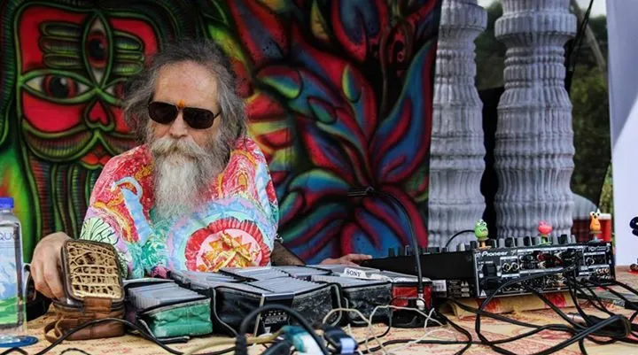
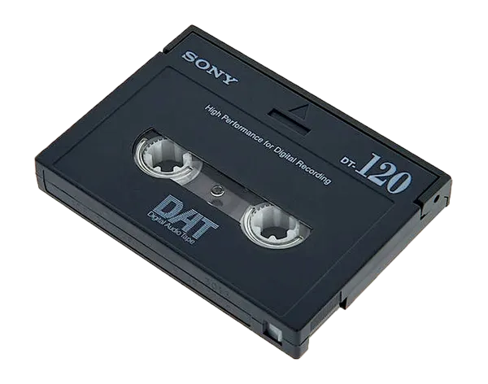

En los 80, la explosión del house llegó a las costas occidentales de la India, en concreto del Acid House. Aunque varios DJs legendarios de Goa afirman haber iniciado la escena, quien le dio ese toque electrónico fue probablemente Goa Gil .

Fue Goa Gil quien trajo el Krautrock , el Industrial y el EBM a Goa. El calor extremo derretía el vinilo, así que los DJ de Goa aprendieron a hacer casetes y cintas DAT premezcladas. Seleccionaban pistas en algunos casos eliminando las voces y simplemente haciendo un bucle con las líneas de base profundas y arpegiadas (una característica distintiva que persiste en el Psy Trance hasta el día de hoy).

De hecho, fueron los DJs de Goa quienes inventaron el trance. Pero era un trance básico, nacido por necesidad: EBM depurado y muy editado, con líneas de acid. El uso de DAT premezclados significaba que los DJs no tenían que mezclar mucho.
Así comienza la larga tradición del Psy Trance de sesiones de DJ con mezclas deficientes y pistas muy largas ( promedio de más de 10 minutos ).
Comparativamente hablando, el DJ de Psy Trance es el más perezoso de la música electrónica, pero no importa, porque también tiene la mayor resistencia. Ser DJ es una maratón, no un sprint en Psy Trance. No es raro que las sesiones duren de 6 a 8 horas (el propio Goa Gil llegó a mezclar 36). Pero aun así, solo graban un par de docenas de temas.
Pero al igual que Ibiza, Goa no es donde crearon su música. Solo la crearon al regresar a Europa. Cada año grababan música nueva, se llevaban las cintas a la India, volvían y grababan algo nuevo, y cada año llevaban el sonido más allá, hacia una esencia propia. Para los 90, este sonido desarrolló naturalmente escalas indias e influencias de su tierra adoptiva. Lo único que conservaron del EBM fueron las contundentes líneas de bajo con arpegiadores y ocasionales samples de películas de ciencia ficción.
Este sonido no se codificó en sellos y artistas dedicados hasta alrededor de 1993. La época dorada de Goa (93-99) estuvo marcada por una mayor experimentación. Algunos lo hicieron más lento y nos dieron Psydub , otros lo aceleraron y nos dieron Psychedelic Trance , y luego, aún más rápido y difícil, nos dieron Darkpsy.
Probablemente no exista una diferencia real entre "Goa Trance" y "Psychedelic Trance", al igual que no existe diferencia entre Jungle y Drum 'n' Bass. El cambio de nombre se produjo a finales de los 90 (solo la gente de la vieja escuela lo llama Goa Trance), pero considero que existe una distinción más clara entre el antiguo sonido Goa y el nuevo sonido Psy, que marca una diferencia más clara que algunas de las distinciones arbitrarias en otras escenas.
Para empezar, Goa Trance está completamente enamorado de la India y de todo el arte e iconografía hindú superficial que puede embutir en una rave. También de las escalas, melodías, cantos y, a veces, incluso instrumentos indios.
El Psy Trance buscó acabar con todo eso y, aunque seguía siendo muy psicodélico, se distanciaba de sus orígenes a medida que surgían escenas saludables en todo el mundo, entre ellas:
Israel, dándonos el Trance Israelí o Nitzhonot, que era algo potencial hasta que se inventó Full On , robándole su audiencia.
América, que probablemente era solo Christopher Lawrence (a veces) y todas esas tonterías ruidosas que hay en Burning Man.
Australia, donde se las conoció como fiestas "Doof" por el sonido de un bombo ligeramente saturado que produce al darle mucho sustain.
Dicho esto, el Goa Trance, como género vigente, está prácticamente relegado a un lejano estilo de los 90. Existe un movimiento para revivirlo como "Nueva Escuela" o "NeoGoa", pero su principal sustituto es el Trance Psicodélico y sus sucesores.